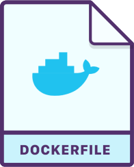
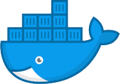
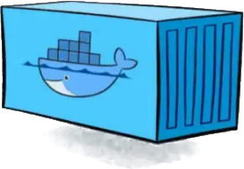
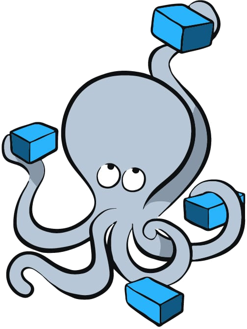

When working in teams on the same project, it is painfully common to encounter environment-related issues. For example, a C++20 feature may compile perfectly on one developer's machine but fail in CI, or the same program may produce slightly different results depending on who runs it.
That is... unless you use Docker. Docker removes those potential inconsistencies which affect reproducibility (coming from differences in operating systems, compiler versions, library dependencies, or build configurations), by allowing to build an image and having it shared and run between all developers and CI/CD servers - i.e. no more “why does it not work in my machine?”.
When I think about Docker, I like to picture a factory floor with different machines working together. Machines need to be designed, built, operated, and most importantly, orchestrated. With that analogy, I introduce four core concepts in Docker:

As mentioned above, the Dockerfile is the file where we specify the environment that we want (the operating system, package repositories and versions). Sometimes, if we want to build and run a program or application (for instance, to run a Jupyter Notebook on some server), then we would also specify the necessary files, dependencies, configuration, and commands to run such program or application. For instance, below we tell Docker that we want our workstation to run on an Ubuntu Linux 22.04 (Jammy Jellyfish) distro, with a set of tools likegit (a software for version control), python3 and gcc, g++ and make (all these - and others - installed with the build-essential metapackage).
# Start with Ubuntu Linux version 22.04
FROM ubuntu:22.04
# Avoid interactive prompts during package install
ENV DEBIAN_FRONTEND=noninteractive
# Update base system and install common utilities
RUN apt-get update && apt-get install -y \
git \
build-essential \
tzdata \
python3 \
&& rm -rf /var/lib/apt/lists/*-y in apt-get install -y allows us to automatically anwer "yes" to confirmation prompts like “Do you want to continue? [Y/n]”. We need this in order to not have our build stopped because we need to answer that question to continue. Similarly, we set DEBIAN_FRONTEND=noninteractive, because some packages might require configuration during install and will try to open a prompt (for example, another package we're installing, tzdata, often asks you which timezone to use).
Another thing to note is the rm -rf /var/lib/apt/lists/* bit at the end of the apt-get install command. This is often seen in Dockerfiles. The reason is that apt-get update is used in Linux to download metadata about packages (package names, versions, dependencies, etc.), so that apt-get install knows what to download and install. Once apt-get install is finished, that metadata (stored in /var/lib/apt/lists/ by default) is no longer needed in the system, so we remove it.
Other things you may find in a Dockerfile are WORKDIR, COPY, CMD and ENTRYPOINT instructions.
WORKDIR
WORKDIR <working-directory><working-directory> if it does not already exist and) cd into it. <working-directory> will be the starting directory when the image is launched and where commands run by default. If not specified, WORKDIR defaults to /.
COPY
COPY <src> <dest><src>), to the image filesystem (<dest>). Without COPY (or the a bit more complex ADD instruction), the Docker container won't be able to see your files. For instance, imagine you have the following directory layout:
my_project/
├── Dockerfile
├── main.cpp
└── main.py main.py main.cpp ., where . is the current working directory in the image environment. One often can find COPY . ., which copies all files in the current working directory in the local system to the current working directory in the image system.
CMD
CMD ["executable", "param1", "param2"]CMD is another common instruction in Dockerfiles. While RUN is used during the image build (for installing software, compiling code, configuring the system), CMD is used once the image is built and the container starts. For example, to execute the main.py file we copied into the environment:
CMD ["python3", "main.py", "--verbose"]
Now, with all these, you can generate a Docker image and run a Docker container from it. When building the container, the main.py file will be executed, as instructed; and once running, the terminal will open, allowing you to run all sorts of commands. Obviously, the Docker container will successfully run those for which it has the correct programs; but for example, we could use python3 to print a greetings message:
python3 -c "print('Hello from Docker')"g++ to compile our main.cpp file:
g++ main.cpp -std=c++20 --o app
This is where ENTRYPOINT comes in:
ENTRYPOINT
ENTRYPOINT ["executable", "arg1"]ENTRYPOINT ["g++"]<command>, but g++ <command>. This way I can now write main.cpp -std=c++20 -o app (without g++) and I will be effectively inputting g++ main.cpp -std=c++20 -o app into the system. That could be once the docker container is running, typed into its terminal, or through a CMD instruction in the same Dockerfile as follows:
ENTRYPOINT ["g++"]
CMD ["main.cpp", "-std=c++20", "-O2", "-o", "app"]To show a complete example, below I put a Dockerfile which:
# Start with Ubuntu Linux version 22.04
FROM ubuntu:22.04
# Avoid interactive prompts during package install
ENV DEBIAN_FRONTEND=noninteractive
# Update base system and install C++ compiler
RUN apt-get update && apt-get install -y g++ \
&& rm -rf /var/lib/apt/lists/*
# Set working directory
WORKDIR /app
# Copy source file into image
COPY main.cpp .
# Compile at build time
RUN g++ main.cpp -std=c++20 -o app
# Run the compiled program (at run time)
CMD ["./app"]
Once the Dockerfile is written, we can create the Docker image with:docker build -t <image-name>:<tag> <path-to-dockerfile> <image-name> one can input different <tag> values (they will be different images, all with the same name but under different tags).
Once built, you can share the Docker image. There are many ways to do this. For instance, you could (once logged in) push the image to Docker Hub:
docker push <username>/<image-name>:<tag>docker pull <username>/<image-name>:<tag>.tar file:
docker save -o <image-name>.tar <image-name>:<tag> docker load -i <image-name>.tar
As mentioned before, the Docker container is the running instance of a Docker image. One can write:docker run --name my-container <image-name>:<tag> my-container container. It is important to assign a name to the container, or to know the name of the container, because once done using it, you have to stop it from running:
docker stop my-containerdocker rm my-containerdocker rmi <image-name>:<tag> A common practice when running containers is to attach a volume so that data generated inside the container can be stored outside of it. This allows results to persist even after the container stops or is removed. For example, with the command:
docker run --name my-container -v $(pwd)/outputs:/app <image-name>:<tag>my-container from the image <image-name>:<tag>, while mounting the local directory $(pwd)/outputs to the working directory in the container, /app. This creates a mapping between the host system and the container, which allows any files generated in the /app of the Docker container to automatically appear in the local $(pwd)/outputs directory.
Similar to the option -v above, which maps a folder on the host system to a folder in the container, the option -p maps a port on the host system to a port in the container. For instance:
docker run --name my-container -p 8080:80 <image-name>:<tag>localhost:8080 on the local machine are forwarded to port 80 inside the my-container container. This is useful, for example, when running services such as Jupyter Notebook.
main.cpp file (the program located at /app inside the container) runs a simulation that generates data during execution. This data - let's say, a set of .csv files - is written to the container's working directory /app. We want to map this directory to a volume in the host system so that the data persists after the container is done running.
At the same time, we would like to analyse and visualise this data using a Jupyter notebook. Ideally, the notebook should also be able to query runtime metadata (such as simulation status or progress) from the running simulation while it is executing.
There are three ways one can do this:
docker run --name cpp-container -p 5000:5000 -v cpp-simulation-data:/app cpp-simulation-imgdocker run --name jupyter-container -p 8888:8888 -v cpp-simulation-data:/data jupyter-notebook-imgimport requests
requests.get("http://host.docker.internal:5000/status")docker network create cpp-simulation-network docker run --name cpp-container --network cpp-simulation-network -v cpp-simulation-data:/app cpp-simulation-img docker run --name jupyter-container --network cpp-simulation-network -p 8888:8888 -v cpp-simulation-data:/data jupyter-notebook-img import requests
requests.get("http://cpp-container:5000/status") -p 8888:8888 option is still used so that the Jupyter interface can be accessed from the host system through a web browser.

As we have seen above, in real applications, a single container is rarely enough: we might need one container for our simulation code, another for a notebook environment, and perhaps others for databases or APIs. Managing all of these individually quickly becomes cumbersome. A more maintainable approach is to define the entire multi-container application in a Docker compose file. This is a configuration file where one can declare all services, networks and volumes they need for their application. Docker compose then takes this file and creates the required network and launches all services with the specified configuration.
This is where Docker Compose becomes useful. Docker Compose allows us to define and run multiple containers as a single application using a configuration file. In that file we describe the services that make up our application, how they interact, and what resources they share.
Docker Compose files are typically saved as compose.yaml or docker-compose.yml. Below is a simple Compose file we could use for our example:
version: "3.9"
services:
cpp-container:
image: cpp-simulation-img
volumes:
- cpp-simulation-data:/app
jupyter-container:
image: jupyter-notebook-img
ports:
- "8888:8888"
volumes:
- cpp-simulation-data:/data
depends_on:
- cpp-simulation
volumes:
cpp-simulation-data:It contains some basic keywords:
versionThis is used to specify the Compose file format version. It determines which features and syntax are available. However, newer Compose implementations may ignore this.
servicesThis is the building block of a Compose file. Each service defines one container (or a set of identical containers) that is part of the application and includes many configuration options:
container-name
In our example above, we specify the name of the containers we use for our service: cpp-container and jupyter-container.
imageSpecifies the Docker image used to create the container. Alternatively, you can create the image out of a Dockerfile, with (for example):
cpp-container:
build:
context: .
dockerfile: Dockerfile
volumes:
- cpp-simulation-data:/appports
Used to maps a host port to a container port, following the format HOST_PORT:CONTAINER_PORT
volumes
Used to mount persistent storage inside the container, following the format VOLUME_NAME:CONTAINER_PATH. Note this is different from the volumes keyword which can find at the bottom of the compose file. That is used to create a managed Docker volume, which (unlike the volumes we mount inside a specific service) can be shared between services.
depends_onUsed to make sure that one service starts after another - for our case, for example, we want jupyter-container to start after cpp-container
commandThis is not in the example file above, but it is very common to find. It is used to override the default command defined in the Docker image of the service. For example, we could have:
cpp-container:
build:
context: .
dockerfile: Dockerfile
volumes:
- cpp-simulation-data:/app
command: ./appenvironmentThis is also not in the example file above, but it is very useful when wanting to define some environment variables inside the container. For example:
cpp-container:
image: cpp-simulation-img
volumes:
- cpp-simulation-data:/app
environment:
- MODE=production
- API_PORT=5000networks
I have not added this in the compose file as Docker compose automatically generates one. However, if you wish to define a custom network, you can write (outside the services section):
networks:
cpp-simulation-network :services:
cpp-simulation:
networks:
- cpp-simulation-network Once your Docker images (or Dockerfiles) and your Compose configuration are ready, running the entire application is straightforward. Instead of starting containers individually, Docker Compose allows you to launch the full system with a single command:
docker compose upThis command builds images (when necessary), creates the containers, configures the networks and volumes, and starts all services defined in the Compose file.
When you are done, everything can be stopped and cleaned up just as easily:
docker compose downDocker is, in conclusion, amazing. It provides a very convenient way to reproduce and share complete application environments. By describing the services, dependencies, and resources in a single file, teams can run the same multi-container setup locally, in CI pipelines, or on other machines with very little effort.